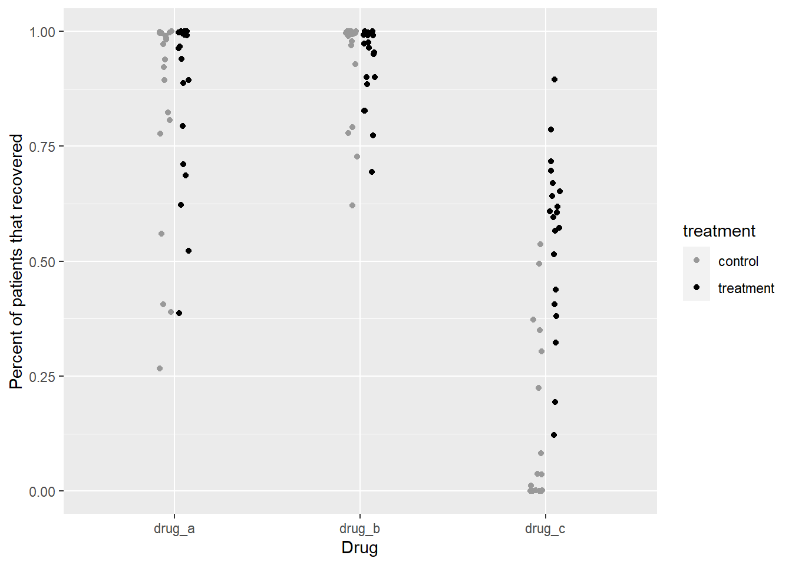
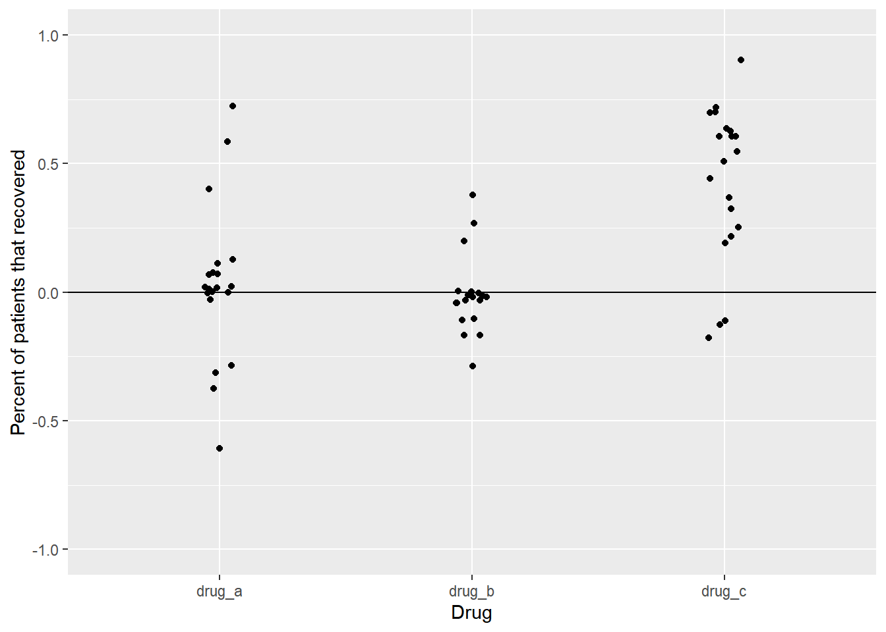

5 Why Statistics
Statistics is the process of making inferences from data. That’s it. We find that statistics can be daunting for undergraduate students. It was daunting for us as well. The goal of this book is not to teach you how to be a statistician. It is to teach you how to begin working with and understanding data as it pertains to scientific inquiry. The skills you learn here should allow you to read a scientific paper and not have to look up what a standard error is or what a confidence interval is or what the difference is between a median and a mean.
A poorly kept secret in science is that you need a working understanding of statistics whether you use it formally or not. Consider a doctor who needs to prescribe a drug for disease X. There are three drugs on the market for this disease. The drugmakers have provided you with the following graphs showing how good their drugs are at treating this disease.
## # A tibble: 6 x 3
## trial drug prop_recover
## <int> <chr> <dbl>
## 1 1 drug_a 1
## 2 1 drug_b 1
## 3 1 drug_c 0.7
## 4 2 drug_a 0.89
## 5 2 drug_b 0.98
## 6 2 drug_c 0.12Figure 5.1: Proportion of patients that recovered from a disease after taking one of three drugs. Each dot represents the outcome of a single experiment (i.e. trial).
Figure above shows the result of twenty trials of each drug. For each trial, the drugmakers calculated the percentage of patients that recovered from the disease after taking the drug.
Which one should the doctor prescribe?
For drugs A and B, several trials showed that 100% of patients that took the drug recovered. Those seem like good choices. For drug C, recoveries were all over the place. In some trials, less than half of the patients recovered after taking the drug. That doesn’t seem good. However, since the doctor took Inquiry and Analysis in Biology as an undergrad, they notice something odd about these data. The drugmakers only report recoveries of people who took the drug. What about people who had the same disease but didn’t take a drug? In other words, what about the controls? The doctor asks for this information. Let’s look at the same graph, but now with the data for controls added.
## # A tibble: 6 x 4
## trial drug treatment prop_recover
## <int> <chr> <chr> <dbl>
## 1 1 drug_a treatment 1
## 2 1 drug_b treatment 1
## 3 1 drug_c treatment 0.7
## 4 1 drug_a control 0.41
## 5 1 drug_b control 1
## 6 1 drug_c control 0In the figure above, the black dots are the same as before. The gray dots show the percent of people who recovered without taking the drug. Does this information change your perception of the benefits of taking either drug? In the first graph, it seemed obvious that drugs A and B were better than drug C, because most people recovered with those drugs.
Adding the control data tells a different story. While it is true that most people recovered when taking drugs A and B, they also recovered without taking those drugs. For drug C, only ~25 to 75 percent of people recovered when taking it, but that percentage appears much higher than the percentage of people that recovered without taking the drug. In some trials, almost no one recovered without the drug. This complicates the decision of which drug to choose.
Because our doctor took Inquiry and Analysis in Biology and later took biostatistics, they ask for further information. Instead of just looking at the data for each group, they want something more informative. For each trial, they subtract the percent that recovered when taking the drug from the percent that recovered when not taking the drug. Then they plot it. It looks like this.
## # A tibble: 6 x 5
## trial drug treatment control difference
## <int> <chr> <dbl> <dbl> <dbl>
## 1 1 drug_a 1 0.41 0.59
## 2 2 drug_a 0.89 0.81 0.08
## 3 3 drug_a 0.96 0.56 0.4
## 4 4 drug_a 0.62 0.99 -0.37
## 5 5 drug_a 1 0.99 0.01
## 6 6 drug_a 0.99 0.27 0.72
Now we see a different story than the figure we started with. By displaying the differences in recover, instead of the raw recovery rates, it now appears that drug C is a clear winner. In all but three trials, recovery rates were higher for people that took the drug compared to those that didn’t.
So far, we have only plotted the data. We haven’t quantified anything yet, but by plotting the data and being self-critical of the ways in which we might be fooling ourselves, we have practiced quantitative reasoning.
Plotting data as among the most important steps in any project. Plotting (aka making graphs, data visualization) does several things. 1) It reveals any obvious problems in data entry. 2) It shows obvious trends in the data. 3) It crystalizes the experimental design. This last step is crucial. Deciding what to put on the x-axis versus the y-axis, how to label those axes, what range to put on the y-axis, what groups to label in the figure legend…these are just some of the choices you’ll make when plotting data. Students often do this step last, hoping to add a graph at the end to complete an assignment. Don’t do that. Plot early and often, even before you have data. If you know what the axes should be, and which groups will go side-by-side (like the gray and black dots in Figure X), then you have already crystalized nearly everything that you will later write about in the rest of your paper. We call this process Figures First, and give examples in later chapters.
5.1 Summary Statistics
Now that we’ve plotted our results, the next step is to describe them using summary statistis. Summary statistics are numbers that describe some aspect of the data. They include things like the mean, median, standard deviation, quartiles, minimum, and maximum. In combination with plotting, summary statistics are critical for communicating science. Summary statistics also provide a guide for how to verbally describe your results to your professor, colleague, friend, or whoever is trying to understand your science.
You should aim to provide at least the following summary statistics for every important result. They are defined below along with the R function that calculates them in italics.
Mean The central tendency of your data. calculated as the sum of the value of all data in a group divided by the number of datapoints in that group. mean()
Standard Deviation The spread of your data. Let’s say you have 10 data points with a mean of 2 and a standard deviation of 0.5. Even though the mean is 2, very few individual data points will be exactly 2. In fact, none of them may be exactly 2. Instead, the datpoints will “deviate” from the mean. A standard deviation of 0.5 means that the average deviation from the mean is 0.5 absolute units from 2. We usually write this with +/- symbols (2 +/- 0.5), meaning that a typical data point might be anywhere from 2 + 0.5 to 2 - 0.5, that is 2.5 to 1.5. sd()
Minimum The smallest value. min()
Maximum The largest value. max()
The code below will generate the dataset used in Figure 3 above called drug_data - just copy it and run it. Don’t worry about interpretting it for now.
library(tidyverse)
set.seed(222)
drug_data <- tibble(drug_a_treatment = rbeta(20, 2,.25),
drug_b_treatment = rbeta(20, 2, 0.3),
drug_c_treatment = rbeta(20, 2, 2),
drug_a_control = rbeta(20, 1.8, 0.25),
drug_b_control = rbeta(20, 1.8, 0.25),
drug_c_control = rbeta(20, 0.2, 1)) %>%
mutate(trial = 1:nrow(.)) %>%
pivot_longer(cols = -trial, names_to = "drug", values_to = "y") %>%
separate(drug, c("temp", "drug", "treatment")) %>%
mutate(drug = paste0(temp, "_", drug)) %>%
select(-temp) %>%
pivot_wider(names_from = treatment, values_from = y) %>%
mutate(difference = treatment - control,
difference = round(difference, 2),
treatment = round(treatment, 2),
control = round(control, 2)) %>%
arrange(drug)Once we have a dataset, we use the group_by() and summarize() functions to generate the summary statistics.
drug_data %>%
group_by(drug) %>%
summarize(mean = mean(difference),
sd = sd(difference),
min = min(difference),
max = max(difference))## # A tibble: 3 x 5
## drug mean sd min max
## <chr> <dbl> <dbl> <dbl> <dbl>
## 1 drug_a 0.0315 0.303 -0.61 0.72
## 2 drug_b -0.00950 0.150 -0.290 0.38
## 3 drug_c 0.428 0.306 -0.18 0.9That’s a lot of decimal places! Let’s clean it up a bit before moving on. Compare the code below to the code above. Can you see how we shortened the decimal places? Why did we keep two decimal places for the mean, but only 1 decimal place for everything else?
summary_stats <- drug_data %>%
group_by(drug) %>%
summarize(mean = round(mean(difference),2),
sd = round(sd(difference),1),
min = round(min(difference),1),
max = round(max(difference),1))
summary_stats## # A tibble: 3 x 5
## drug mean sd min max
## <chr> <dbl> <dbl> <dbl> <dbl>
## 1 drug_a 0.03 0.3 -0.6 0.7
## 2 drug_b -0.01 0.1 -0.3 0.4
## 3 drug_c 0.43 0.3 -0.2 0.9Now we’ll add the mean and sd to the plot. Can you see how it is added in the code below?
ggplot(drug_data, aes(x = drug, y = difference)) +
geom_point(position = position_jitter(width = 0.065)) +
labs(y = "Percent of patients that recovered",
x = "Drug") +
ylim(-1,1) +
geom_hline(yintercept = 0) +
geom_pointrange(data = summary_stats, aes(x = drug, y = mean, ymin = mean - sd, ymax = mean + sd), size = 1, color = "orange")
This looks pretty close to a finished product now. It has lots of information in the plot, including the raw data, the mean, and the standard deviation. By combining the summary statistics and the plot, we are ready to write a paragraph about this result.
Across 20 trials, recovery rates were 0.43 +/- 0.3 points higher for groups that took drug C versus that took a placebo. Recovery ranged from -0.2 to 0.9. In comparison, recovery rates for drug A were only 0.03 +/- 0.3 points higher than placebo controls, and recovery rates for drug B were 0.01 +/- 0.1 points worse than placebo controls. However, direct comparison of these drugs is complicated by the fact that raw rates of recovery were highest for drugs A and B, in which nearly all patients recovered in both treatment and control groups. In contrast, recovery rates for drug C were ~50% in the treatment group, but only ~10% in the control. This suggest the potential that the trials were conducted on groups with different underlying probabilities of recovery.
5.2 Don’t forget that Quantitative Thinking includes “thinking”
A statistical model alone will not answer your scientific question. The workflow presented above is not a formula for success in every case. Each problem you attempt to solve as a scientist is unique and will require you to make judgement calls. Statistics can help us to justify those judgments, making our decisions less susceptible to personal bias, but they cannot eliminate subjectivity. The point of Quantitative Thinking is not to replace critical thought with computer generated outputs. It is to use the tools of statistics and experimental design to prevent us from fooling ourselves. As Richard Feynman said: “The first principal [of science] is to not fool yourself, and you are the easiest person to fool.”